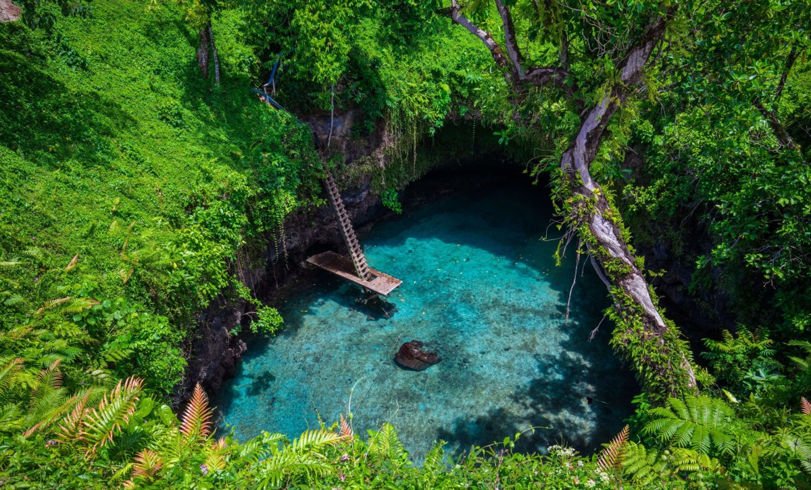

Stop 2: To-Sua Ocean Trench
To-Sua Ocean Trench is a famous natural attraction on the south coast of Upolu. It has beautiful turquoise water surrounded by tropical plants. Visitors can enjoy the scenery and explore the area while following local safety rules.
